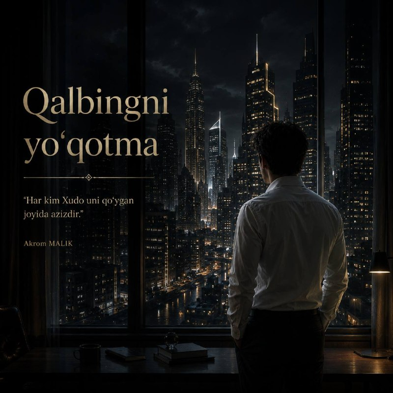

Rivojlanish – avjda. Hashamatli binolar. Kastim-shimli odamlar. Minglab insonlarni…

Rivojlanish – avjda. Hashamatli binolar. Kastim-shimli odamlar. Minglab insonlarni jamlagan xonalar. Notiqlar – monitordan qandaydir chizmalarni ko‘rsatgan, o‘zini oliftanamo tutgan, suzilib, cho‘zilib, tinglovchilar diqqatidan mast bo‘lib, yettinchi qavat osmonda uchayotgan notiqlar. Chiroqlar. Musiqa. Taralgan sochlar, yarashgan liboslar, hipcha qomatlar, savlatli qarashlar.
Ichingda nimadir jizillab ketadi. Birdan yuraging gupirlab ketadi.
“Men ham shular safida bo‘lsaydim!”
Bu manzara youtubedagi videoda rosa jazzob ko‘rinadi. Hammaning og‘zidan boylik va’dasi yangraydi: “Boy bo‘l! Boy bo‘l! Yana boy bo‘l!”
Ora-sirada, masalan, islom, ummat, musulmonlik kabi so‘zlarni qistirib ketishadi: “islom moliyasi”, “musulmonchilik an’analari”, “islom moliyasi shu qadar mukammalki”, “agar ateist bo‘lganimda ham, islom moliyasini tanlar edim”, “ummat uchun xizmat”…
Lekin diqqat qilinsa, ularning turq-u tarovatlarida na islom, musulmon ko‘rinadi. Ammo moliya bo‘lishi mumkin. Yosh va samimiy, dovdir va xom, dumbul va din bilan yangi tanishganlari hayotining eng buyuk ishini qilayotganlariga ishonayotgandek ham ko‘rinadi. Lekin qalblardagi qayg‘u ne ekanligini har kim o‘zi tekshirishi kerak: bir tarozini o‘zing uchun yasa; uning bir pallasiga moliya, boylik, obro‘, dunyo tashvishini qo‘y; ikkinchi pallasiga o‘limdan qanchalik qo‘rqasan, oxiratni qanchalik o‘ylayapsan, Xudoning zikri va Unga shukur uchun necha dona lahzangni ajratyapsan – shularning javobini qo‘y – adolat bilan qayt-chi, qaysi tomon og‘ir kelyapti? Javobi menga ham, Esh bilan Toshga ham qiziq emas, o‘zing bilib qo‘y, yetadi. Javobi aslida qaysi tomonda turganingni, aniqrog‘i nima bilan ovora ekaningni ko‘rsatadi.
Hajm va miqdor ba’zan mohiyatni aks ettirmaydi. Yuksak hajm va ko‘p miqdor mohiyat shu qadar yuksak va pok degani emas. Xuddi qalashtirilgan va turli istilohlar bilan ziynatlangan nutq hamisha ham haqiqatni aks ettirmagani kabi.
U sahnadagilar, u zeb-u ziynatga burkangan zotlar bu videolari orqali bozor ochmoqdalar, xolos. Ularning tomoshasi bozor rastasidan farqsizdir. Bunday rastalar faqat ularga xos emas, dunyo ahlining har biri dunyo maydonining har bir qarichini bunday rasta bilan, yoyma bilan to‘ldirib tashlashgan. Ularga angrayib yurish bilan kun kech bo‘ladi. Vaqt o‘tadi. Ularning safiga qo‘shilay deyish o‘z qiymatingni yerga urishdir. Har kim Xudo uni qo‘ygan joyida azizdir. Toshbaqaning uchaman deyishi o‘zi uchun qanday ziyon bo‘lsa, chumchuqni yerda yashash istagi o‘zi uchun shu qadar xatardir. Har kimni himoyasi uning turgan joyi va tutgan maqomiga yashiringan.
Bundan keyin “taraqqiyot” avj olaveradi, “rivojlanish” alangasi qamrab olmagan maskanlar qolmaydi, faqat vaqt kerak, xolos. Qalbi va aqlini, jismi va naslini, dunyo va oxiratini saqlab qolish, ya'ni bu yong‘indan jon saqlash, balki bu olovda o‘zingga kerakli ovqatni kuydirmay pishirib olish endi asosiy ishga aylanadi. Yer istalgan paytda yoriladi, osmon istalgan paytda yomg‘ir emas, tosh yog‘dira oladi, shamol sendan so‘ramay olamning kulini ko‘kka sovuradi – yer yuzida qanchalik bino va imoratlarni qurma, ularning baland ekaniga qarab qanchalik mast bo‘lma, ularni bir zumda yo‘q qiladigan Kuch bordir. Har qancha gavjum davrada bo‘lma, har qancha lazzat og‘ushiga cho‘kma, baribir yolg‘izlik achchig‘ini totmoqqa majbursan, baribir, zaiflik zanjirida jon berishga mahkumsan.
Qalb sohiblari, aql egalari mo‘ljalni shunga qarab olishadi, mo‘ljaldan adashib qolishmaydi. Osmono‘par minoralar o‘rmonida o‘zingni yo‘qotib qo‘ymasang, bas, aks holda, keyin topishing juda mahol.
Akrom MALIK